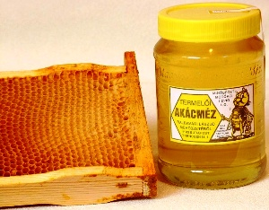

|
|
|
Honig ist ein von Honigbienen erzeugtes Lebensmittel mit den
Eigenschaften: fein,
süß, mehr oder wweniger schwerflüssig, energiereich, leicht verdaulich,
gesund. Der Honig enthält 11 verschiedene Vitamine, 33
verschiedene Mineralstoffe und 19 Enzyme. Weltweit sammeln die Honigbienen den Nektar von mehreren Tausend blühenden Pflanzen. |
 |
|
 |
Honig spielte schon zu Attilas Zeiten eine
wichtige Rolle in der Ernährung der Magyaren. Heute ist Ungarn ein
kleines Land, aber ein Großproduzent und wichtiger
Exporteur von echtem
Bienenhonig.
Die fachgerechte Produktion ist eine mühselige Arbeit,
die stark witterungsabhängig ist. In schlechten Honigjahren, wie die
Jahre 2013-2015 waren, erntet man wenig. Da geraten die Händler
in Teufels Küche
und verkaufen soviel gefälschten Honig, wie der ahnungslose
Kunde kauft. |
|
Die häufigsten Honige
in Ungarn |
|
|
Akazienhonig/Akácméz - wird in Ungarn besonders
hochgeschätzt und am meisten verzehrt. Akazienhonig kristallisiert am
wenigsten, hat eine helle Farbe und duftet besonders stark nach
Akazienblüte. Er mildert den Hustenreiz, "desinfiziert" den
Verdauungstrakt, wirkt förderlich bei übermäßiger Magensäure und
ist eine der wichtigsten Süßungsmitteln überhaupt.
Bild
rechts: Nektar sammelnde Honigbiene auf Akazienblüte. |
 |
Lindenhonig/Hársméz - in Ungarn wächst fast
überall nur die Silberlinde, selten die bei uns einheimischen
Sommer- und Winterlinde. Der Honig von der Silberlinde duftet
etwas intensiver, schmeckt aber praktisch genauso, wie von allen
Lindenbäumen. Der Lindenhonig besitzt eine grünlich gelbliche
Farbe und einen aromatischen Geschmack, der an Menthol und Minze
erinnert. Der ungarische Lindenhonig (!) wirkt antiseptisch und
wird daher bei fiebrigen Erkrankungen empfohlen. Er wirkt
kräftigend und zugleich beruhigend bei Schlafstörungen.
Wichtig: Beachte die unterschiedliche
Namensgebung in Deutschland und Ungarn! - Ein eigenes Kapiel ist
der Honigtau, weil dieser von deutschen Imkern von den Linden- und
sogar von Ahornblättern gesammelt, zum Lindenhonig gemischt und zusammen als
Lindenhonig angeboten wird.
De Facto ist der deutsche Lindenhonig dadurch schon lange ein verwässerter
Bienenhonig.
Nachdem der Gesetzgeber den Fälschern auf die Schliche kam, erfand
man hierzulande die Bezeichnung Lindenblütenhonig
für den nicht mit Honigtau gestreckten Bienenhonig. - Eine präzise
Bezeichnung ist das schon allemal! Es bleibt jedoch die Frage
offen: Warum das Wortteil Blüte bei anderen Honigsorten nicht
verwendet wird, wenn sie nicht mit Falschem Honig aus China gestreckt
werden?
Honigtau und gefälschten Honig
mischt man in Ungarn nicht zum Bienenhonig und so
müsste der ungarische Lindenhonig in Deutschland als
Lindenblütenhonig bezeichnet werden, wird aber nicht!
- Den Begriff Lindenblütenhonig gibt es nur in Deutschland. Es ist
eine pfiffige Erfindung des Handels, damit man das verwässerte
Bienenprodukt auf den Etiketten für ahnungslose Kunden, wie die
meisten Kunden nun mal sind, als echter Honig vorgaukeln kann.
|
Gemischter Blütenhonig/Vegyes Virágméz - kann
recht unterschiedlich schmecken, je nach dem, welche Blüten die
Honigbienen aufsuchen. Er kristallisiert relativ schnell, wird oft
beim Backen, Kochen oder als Süßmittel von Tee verwendet.
Blütenhonig wird empfohlen für die Kräftigung bei
Erschöpfungszuständen.
|
Sonnenblumenhonig/Napraforgóméz - goldgelb
glänzend, in wenigen Wochen auskristallisierender Honig.
Beim Kuchenbacken
ist er ideal, ebenso in diversen Getränken. Weitere Eigenschaften:
kräftigend, harntreibend und antiseptisch.
|
Rapshonig/Repceméz - wird auch cremiger Honig
bezeichnet, weil er schnell auskristallisiert und dabei seine
Schmierfähigkeit behält.
Er ist beliebt wegen seiner herauskristallisierte, breiartige
Konsistenz am Tisch. Seine Farbe ist weißlich vom hohen
Traubenzuckergehalt. Rapshonig wird bei Säureempfindlichkeit,
ferner bei Magen-Darmbeschwerden empfohlen.
|
| |
|
Wissenswertes beim
Honigkauf |
|
|
| 40°C |
Über 40°C
verschwinden die meisten Wirkstoffe aus dem Honig. Aus diesem
Grund sind zwei Prozeduren wichtig, die man nur von einem Imker
erwarten kann: |
- Kaltgeschleudert - aus der Wabe
kaltgeschleudert verbleiben die Wirkstoffe im
Honig. Wer kontrolliert und garantiert dafür, dass der Honig in
Mexiko oder China unter tropisch-subtropischen Verhältnissen
kaltgeschleudert wird?
- Befüllen der Gläser
- geschieht bei ungarischen und deutschen Imkern manuell,
meistens läßt sich der Imker in der Nachbarschaft dabei
beobachten. Je wärmer der Honig ist, umso flüssiger ist er,
aber unsere Raumtempeeraturen sind unter 30°C. Die Fließbänder
der Großbetriebe müssen schnell laufen. Dazu wird der Honig bei
hohen Raumtemperaturen in die Gläser gefüllt - leider über 40°C.
|
|
Achten Sie beim Kauf von Honig darauf, was auf den Etiketten
steht! Die Angabe der Herkunft ist Vorschrift und man denkt, das
sei eine wichtige Verbraucherinformation. Am
Bild rechts sehen Sie stark vergrößert, was auf fast allen
Honiggläsern in
den
Lebensmittelgeschäften steht. So wissen Sie bescheid, was man in
dem Laden von den Kunden hält. |
 |
Sogenannter Markenhonig von Großhändlern wird
weltweit aus allen Ländern aufgekauft, weil der Preis den Markt
bestimmt.
Lassen Sie sich nicht verschaukeln
mit dem Hinweis auf Regionalprodukt. Der Begriff Regionalprodukt ist eine
durch keine Vorschrift geschützte Masche
und wird nicht kontrolliert.
Wer sowas angiebt, ist ein Händler, der irgendwo einkauft und selten eine Ahnung davon
hat,
aus welcher Region seine Ware tatsächlich stammt.
Kaufen Sie am besten direkt
beim Imker und auch nicht am Wochenmarkt, wo sich viele Händler
als Produzenten vorgaukeln. |
 |
Schlimm ist es für die
Honigimporteure geworden, dass der falsche Honig und sogar seine Herkunft
seit wenigen Jahren durch die moderne Mikrochemie nachweisbar
ist. Der Honig in den Regalen deutscher Lebensmittelgeschäfte stammt
heuer weitgehend aus China. Diese Honiggläser
enthalten bis zu 80% gefälschten Honig, zudem auch echter
chinesischer Honig gemischt wird, der nebenbei auch Antibiotika enthält, die in
der EU längst verboten sind. - Dagegen protestieren die ungarischen Imker seit
vielen Wochen in Brüssel, ohne viel Echo in den Medien.
Vor chinesischen Waren kapitulieren die meisten EU-Abgeordneten
schon immer und das lohnt sich für unsere Auserwählten. Sie wissen bescheid, nach Meckern
werden sie nie mehr ins Land der Morgenröte eingeladen und deutsche
Exporte nach Fernost könnten gefährdet sein. Wer interessiert sich
bloß im Bundestag dafür, ob
die deutsche Bevölkerung von längst verbotenen Chemikalien
gesundheitlich gefährdet ist? Zuständige gibt es zwar dafür in wie
auch immer vorgepreschten Positionen in Berlin, aber die Verantwortung
steht da nur an dritter Stelle mit dem Motto: Mein Name ist Hase...
|
Die Händler und
Lebensmittellieferanten wissen genau, was der Konsument nicht
wissen soll und die Lobbyarbeit in Brüssel schafft die
entsprechenden Vorschriften. Dafür gab es schon nicht
wenige, die für ihre Pension in den 7 Jahren absolut nichts getan
und nur mit Anwesenheit glänzten. An erster Stelle dieser Liste
stand der von seiner soialistischen Partei nach Brüssel
verschasster István Kovács aus Ungarn, ein Mann der alten Garde
aus der Roten Ära, der als Parteibonze
Nachfolger des 1989 verstorbenen Diktators
Kádár werden sollte. Dass diese von fleißigeren
Parlamentariern aufgelistet und in den Medien
verpetzt wurden, änderte nichts daran, dass es auch heute so
weitergeht. So weiß man bescheid, dass ca. 20.000 hochdotierte
Lobbyarbeiter die wenigen, tatsächlich aktiven unter den insgesamt
751 EU-Parlamentariern
direkt in Brüssel beraten und mit Gesetzestexten versorgen, die sie
zuerst ins
Mikrofon sprechen sollen.
Tun sie das, werden sie nach Ablauf ihrer Legislaturperiode in Vorstände
gewählt.
Es ist einfach bei, wie auch immer parteiintern
vorgepreschten, mit zweiter Stimme
demokrtisch gewählten
Parteibonzen, wie z.B. der EU-Parlamentspräsident Martin Schulz aus
Deutschland, der das Abitur nicht schaffte, jahrelang
alkoholabhängig und Taxifahrer war. Wie auch immer, als trockener Alkoholiker
errang er den höchst
dotierten EU-Parlamentssitz in Brüssel. Aktiv, womöglich
hypraktiv ist er allemal, beschäftigt sich als parlamentarischer
Verwaltungsleiter mit Angelegenheiten,
wofür er kein Mandat und Qualifikation hat, reist überall hin und
stellt sich in die Mitte von Gruppenfotos, spricht im Namen von
Fachdelegationen, wofür er keine Ausbildung hat - unantastbar und
unabwählbar ist er trotzdem - das ist die wirklich soooo schöne
Seite der Demokratie, die neulich zum Brexit führte. Der Jean-Claude Juncker ist ein weiteres
Kapitel für sich.
Als Luxemburger Finanzminister gründete er eine
EU-Steueroase und wurde damit für den Posten des
Präsidenten der Europäischen Komission
geradezu prädestiniert, damit er vor Gericht unantastbar ist in
einer Zeit, als die EU Jagd auf seine frühere Kunden - sprich
EU-Steuersünder -
bläst.
|
|
|
Ungarn
war schon immer ein Großproduzent von Bienenhonig, weil dieser eine
größere Rolle in der Ernährung der Magyaren spielt,
als in anderen Ländern. Honig wird zur Mangelware in klimatisch
ungünstigen, kühleren und verregneten Jahren, aber auch
Bienenkrankheiten und sogar die Politik spielt gelegentlich eine
unrühmliche Rolle. Obwohl es in Ungarn
schon lange verboten ist, künstlichen Honig zu kochen, in
Notzeiten ist die Bevölkerung schwer
davon abzuhalten. Solche
Notzeiten waren z.B. die Kriegsjahre, dann 1956. Damals gab es
zwar einen langanhaltenden wärmeren Sommer mit viel Honig, aber
ausgerechnet der in bestimmten Medien hochgelobte Imre Nagy sorgte
für Plan- und Exporterfüllung in die Sowjetunion. Dafür
kollektivierte er praktisch die gesamte Jahresproduktion von
Ungarn und
bereits Weihnachten kursierte das Fälscherrezept im ganzen Lande, denn bei
den meisten Magyaren gehört
nun mal der Honig immer auf den Tisch.
|
Rezept für falschen Honig: In 1 Liter Wasser wird 1,5
kg Zucker, 1 geriebene
Zitronenschale, evtl. 2 Päckchen Vanillinzucker, etwa ein Batzen duftende, nicht gewaschene,
daher noch Nektar enthaltende Blüte
geeigneter Pflanzen, wie z.B. Holunder, Akazie, Linde, Löwenzahn,
Kamille u.a.
langsam und ca. 90 Minuten lang unter ständigem Rühren geköchelt, bis eine schwerflüssige Masse
entsteht - bei Kochtemperatur.
Den Unterschied zum
echten Honig kann man augenscheinlich und geschmacklich nicht
erkennen. Durch den hohen Zuckergehalt ist auch der falsche Honig
kalorienreich und kräftigend, enthält aber nur geringste
Wirkstoffmengen, weil diese beim Kochen über 40°C weitgehend
verschwinden.
|
| |
 |
EUROPOL-WARNUNG (Ostern 2016):
Polizei und Zoll haben in 57 Ländern eine Rekordmenge von
gefälschten Lebensmitteln, wie gefärbte Oliven, mit Kunstdüngern
verlängerter Zucker, gepanschter Wein und Alkohol sichergestellt.
- Mehr als 10.000 Tonnen Lebensmittel und eine Million Liter
Getränke wurden bei der "Opereation Opson V" in vier Monaten von
November 2015 bis Februar 2016 sichergestellt. Außerdem, so
berichtet Focus, seien am Brüsseler Flughafen Zaventem große Mengen
an Affenfleisch gefunden worden und der gestreckte Zucker könnte
auch in Deutschland in den Handel gekommen sein.
<<< Klicke auf das Bild (Bildquelle:
) |
Die
Waren könnten "hohe Gesundheitsrisiken für die ahnungslosen
Verbraucher haben" - warnte die auf Verfolgung der
grenzüberschreitenden organisierten Kriminalität (OK)
spezialisierte europäische Polizeibehörde Europol in Den Haag.
"Opereation Opson V" war diesbezüglich die fünfte Aktion von
Interpol. Bei den bisherigen Aktionen stieg die Befundmenge laufend,
dieses Mal wurde so viel beanstandet, wie nie zuvor.
Bundesernährungsminister Christian Schmidt (CSU) erklärte: "Die
Tatsache, dass die gefälschten Lebensmittel sichergestellt wurden,
zeigt, dass das System der Lebensmittelüberwachung funktioniert".
Übrigens: Ob in China hergestellter
falscher Honig und DDT-belasteter echter Honig aus China erfaßt
wurden, wie bei den ungarischen Lebensmittelkontrollen in Herbst
2015,
das geht aus der Interpol-Veröffentlichung nicht hervor.
|
| |
| |
| |
| |
Ungarn-Tourist Team

|
| |
 |
| |
|


 Sie
wollen endlich mal ein Gulasch nach
Originalrezept in Budapest genießen oder die Szegediner Fischsuppe? Dann nichts wie hin.
Sie
wollen endlich mal ein Gulasch nach
Originalrezept in Budapest genießen oder die Szegediner Fischsuppe? Dann nichts wie hin.